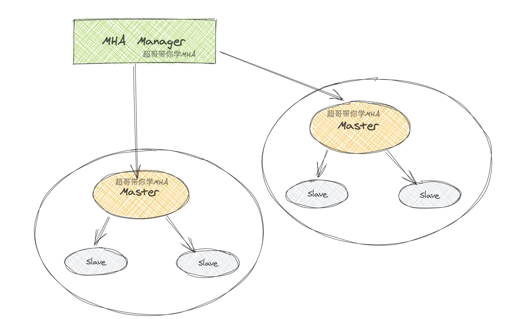
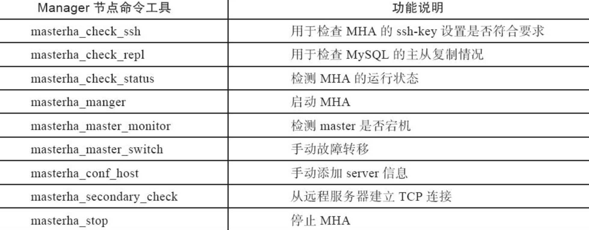
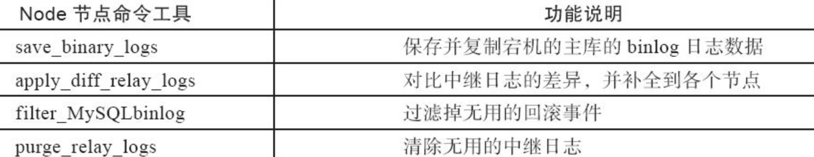
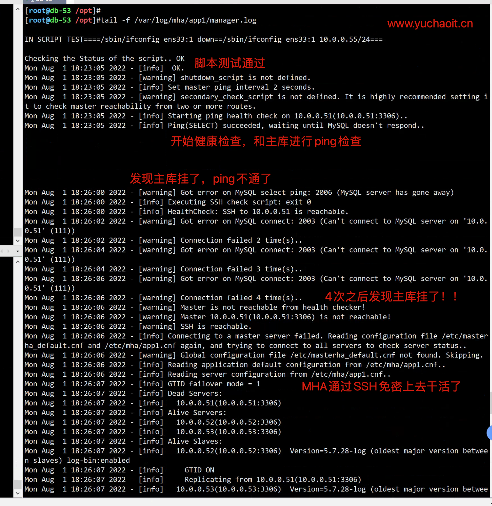
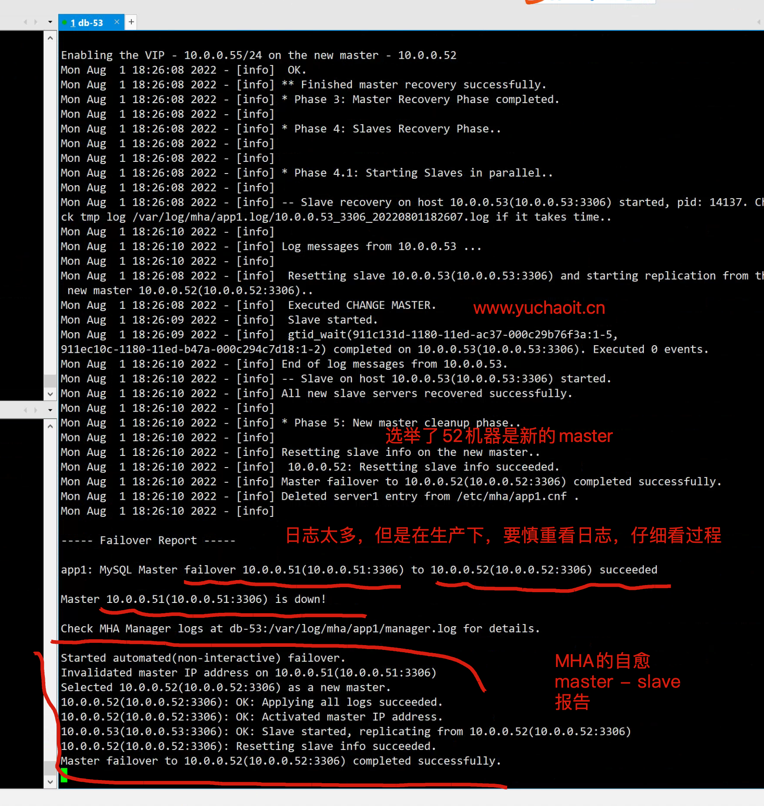
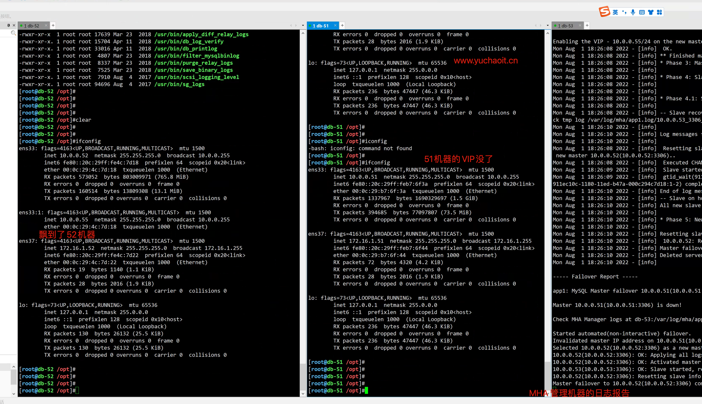
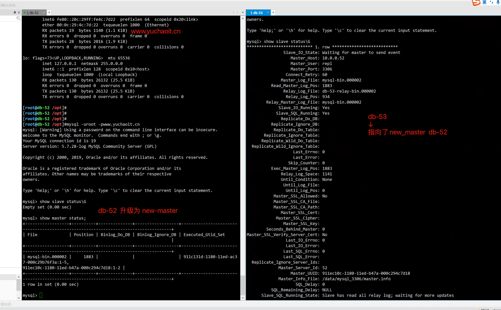

02-11-高可用集群MHA方案
爱奇艺在用的数据库高可用方案
MHA 是目前比较成熟及流行的 MySQL 高可用解决方案，很多互联网公司正是直接使用或者基于 MHA 的架构进行改造实现 MySQL 的高可用。
MHA 能在 30 秒内对故障进行转移，并最大程度的保障数据的一致性。
MHA 由两个模块组成：Manager 和 Node。
1.什么是MHA
MHA（Master High Availability）目前在MySQL高可用方面是一个相对成熟的解决方案，是一套优秀的作为MySQL高可用性环境下故障切换和主从提升的高可用软件。
MHA作用是保证MySQL主从复制集群中的master高可用性，也就保证整个数据库集群业务不被故障影响。
- master故障时，MHA会在30s内实现故障自动检测+故障转移
- 选择一个最优的slave接替为新的master，并且保证new_master和其他slave继续保持数据一致性
高可用性HA、high availability
指的是一个经过设计的系统，能保证减少架构故障时的停工时间，保证业务程序的高度可用性
超哥也在各种运维业务场景下，接触过HA软件
无论是web、数据库、还是后端
2.学习MHA的优势
梳理MHA的优势
1.自动故障转移快
2.主库崩溃仍能保证数据一致性
3.安装配置过程，不需要调整当前mysql实例
4.不需要额外的服务器，一个manager可以管理N个replication，性能强悍
5.支持半同步复制，异步复制
6.只要replication支持的存储引擎，MHA软件都支持，支持多种引擎。
3.MHA架构原理
整个MHA软件由两部分角色组成，即MHA Manager（管理节点）和MHA Node（数据节点）。
MHA Manager服务可以独立部署在一台linux机器，也可以部署在某一台主从复制从节点或者其他应用服务器节点上。
而MHA Node服务需要运行在每一个MySQL服务器上。
MHA Manager会定时通过主库上的MHA Node服务监测主库，当master出现故障时，它可以自动将最优slave（可以提前指定或由MHA判定）提升为新的master，然后让所有其他的从库与新的主库重新保持正常的复制状态。
故障的整个切换和转移的过程对客户以及应用程序几乎是完全透明的（也就是用户不会感知到有故障发生）

4.MHA工作原理
MHA主要功能
- master宕机、切换新的master，且保证其他slave和新的master保持一致复制
- 故障切换过程中，集群数据丢失量最小
一、选择新master
old_master宕机，在集群中选择一个新的slave作为new_master，这要根据MHA的配置，如根据其他slave的binlog位置点，选择最新的slave作为new_master
二、数据补全
进行故障切换、转移之前，必须要进行数据补全，否则即使故障切换了，数据丢了那也是不允许的
数据补全过程
- old_master数据库服务器还可以连接，MHA会SSH连接主库，保存主库所有的binlog
- 若ssh无法连接，放弃主库的binlog数据
- 以切换好的new_master主库的binlog位置点位基准点，通过
relay_log进行数据补全，使得其他所有slave和new_master数据一直 - 将宕机时从old_master上保存下来的binlog日志（如果存在的话）恢复到所有的数据库节点.
三、角色切换
- 已选择好的new_master正式提升为主库角色
- 其他的slave和new_master保持主从复制关系
四、有关master主库IP切换的问题，可以结合keepalived的VIP漂移来实现
5.MHA软件包介绍
MHA由2部分组成
Manager节点
Node节点
manager 组件
masterha_manger 启动MHA
masterha_check_ssh 检查MHA的SSH配置状况
masterha_check_repl 检查MySQL复制状况，配置信息
masterha_master_monitor 检测master是否宕机
masterha_check_status 检测当前MHA运行状态
masterha_master_switch 控制故障转移(自动或者手动)
masterha_conf_host 添加或删除配置的server信息
node 组件
save_binary_logs 保存和复制master的二进制日志
apply_diff_relay_logs 识别差异的中继日志事件并将其差异的事件应用于其他的
purge_relay_logs 清除中继日志(不会阻塞SQL线程)
manager命令

node命令

6.基础主从复制环境部署
准备3个机器，基于GTID的主从复制
db-51
db-52
db-53
注意时间同步
ntpdate -u ntp.aliyun.com
mysql基础环境部署
在开始MHA之前，需要先初始化好一主两从的环境
以及既然是高可用mysql集群，所有节点都要开启binlog，注意配置文件语法
# 做好数据备份，重新初始化mysql
pkill mysqld
rm -rf /data/
rm -rf /mysql_binlog/
# 数据权限设置
# author:www.yuchaoit.cn
useradd -s /sbin/nologin -M mysql
mkdir -p /data/mysql_3306/
mkdir -p /mysql_binlog/
chown -R mysql.mysql /opt/mysql*
chown -R mysql.mysql /data/
chown -R mysql.mysql /mysql_binlog/
# 环境清理
yum remove mariadb-libs -y
rm -rf /etc/my.cnf
yum install -y libaio-devel
# mysql安装
tar zxf mysql-5.7.28-linux-glibc2.12-x86_64.tar.gz -C /opt/
mv /opt/mysql-5.7.28-linux-glibc2.12-x86_64 /opt/mysql-5.7.28
ln -s /opt/mysql-5.7.28 /opt/mysql
echo 'export PATH=$PATH:/opt/mysql/bin' >>/etc/profile
source /etc/profile
mysql -V
db-51机器
cat >/etc/my.cnf <<'EOF'
[mysqld]
user=mysql
datadir=/data/mysql_3306
basedir=/opt/mysql/
socket=/tmp/mysql.sock
port=3306
log_error=/var/log/mysql/mysql.err
server_id=51
log_bin=/mysql_binlog/mysql-bin
autocommit=0
binlog_format=row
gtid-mode=on
enforce-gtid-consistency=true
log-slave-updates=1
[mysql]
socket=/tmp/mysql.sock
[client]
socket=/tmp/mysql.sock
EOF
# author:www.yuchaoit.cn
db-52
Server_id不一样
cat >/etc/my.cnf <<'EOF'
[mysqld]
user=mysql
datadir=/data/mysql_3306
basedir=/opt/mysql/
socket=/tmp/mysql.sock
port=3306
log_error=/var/log/mysql/mysql.err
server_id=52
log_bin=/mysql_binlog/mysql-bin
autocommit=0
binlog_format=row
gtid-mode=on
enforce-gtid-consistency=true
log-slave-updates=1
[mysql]
socket=/tmp/mysql.sock
[client]
socket=/tmp/mysql.sock
EOF
# author:www.yuchaoit.cn
db-53
cat >/etc/my.cnf <<'EOF'
[mysqld]
user=mysql
datadir=/data/mysql_3306
basedir=/opt/mysql/
socket=/tmp/mysql.sock
port=3306
log_error=/var/log/mysql/mysql.err
server_id=53
log_bin=/mysql_binlog/mysql-bin
autocommit=0
binlog_format=row
gtid-mode=on
enforce-gtid-consistency=true
log-slave-updates=1
[mysql]
socket=/tmp/mysql.sock
[client]
socket=/tmp/mysql.sock
EOF
# author:www.yuchaoit.cn
数据初始化，启动
mysqld --initialize-insecure --user=mysql --basedir=/opt/mysql --datadir=/data/mysql_3306/
chown -R mysql.mysql /opt/mysql*
chown -R mysql.mysql /data/
chown -R mysql.mysql /mysql_binlog/
cp /opt/mysql/support-files/mysql.server /etc/init.d/mysqld
systemctl enable mysqld
systemctl stop mysqld
systemctl restart mysqld
netstat -tunlp|grep 3306
mysqladmin password www.yuchaoit.cn
# 测试
mysql -uroot -pwww.yuchaoit.cn -e "status"
主动关系配置
# db-51创建复制账号
mysql -uroot -pwww.yuchaoit.cn -e "grant replication slave on*.* to repl@'10.0.0.%' identified by 'www.yuchaoit.cn';"
# 从库进行连接
mysql -uroot -pwww.yuchaoit.cn
change master to master_host='10.0.0.51', master_user='repl', master_password='www.yuchaoit.cn' , MASTER_AUTO_POSITION=1;
start slave;
# 检查复制状态
show slave status \G
7.MHA架构部署
1.软连接设置
MHA工具会检测mysql命令，这里还需要加软连接
# 所有机器
ln -s /opt/mysql/bin/mysqlbinlog /usr/bin/mysqlbinlog
ln -s /opt/mysql/bin/mysql /usr/bin/mysql
2.节点全部互相通信
yum install sshpass -y
ssh-keygen
sshpass -p '123123' ssh-copy-id 10.0.0.51 -o StrictHostKeyChecking=no
sshpass -p '123123' ssh-copy-id 10.0.0.52 -o StrictHostKeyChecking=no
sshpass -p '123123' ssh-copy-id 10.0.0.53 -o StrictHostKeyChecking=no
# 验证免密
for i in 51 52 53;do ssh root@10.0.0.$i "hostname;echo '超哥带你学linux，www.yuchaoit.cn'";done
3.所有节点安装MHA-node
yum install -y perl-DBD-MySQL -y
yum localinstall mha4mysql-node-0.58-0.el7.centos.noarch.rpm -y
# 检查rpm安装出的命令
[root@db-52 ~]#ls -l /usr/bin/*_*log*
-rwxr-xr-x 1 root root 17639 Mar 23 2018 /usr/bin/apply_diff_relay_logs
-rwxr-xr-x 1 root root 15704 Aug 9 2019 /usr/bin/db_log_verify
-rwxr-xr-x 1 root root 33032 Aug 9 2019 /usr/bin/db_printlog
-rwxr-xr-x 1 root root 4807 Mar 23 2018 /usr/bin/filter_mysqlbinlog
-rwxr-xr-x 1 root root 8337 Mar 23 2018 /usr/bin/purge_relay_logs
-rwxr-xr-x 1 root root 7525 Mar 23 2018 /usr/bin/save_binary_logs
-rwxr-xr-x. 1 root root 7910 Aug 4 2017 /usr/bin/scsi_logging_level
-rwxr-xr-x. 1 root root 94696 Aug 4 2017 /usr/bin/sg_logs
4.db-53安装MHA-Manager
MHA管理节点可以装在任何节点，于超老师这里就给安装到了slave03 节点
因为Manager管理节点，通过ssh检测mysql集群，如果master节点服务器宕机，或者网络故障，MHA也无法完成故障切换了。
因此mha-manager不能装在master节点
[root@db-53 ~]#yum install epel-release -y
[root@db-53 ~]#yum install -y perl-DBD-MySQL perl-Config-Tiny perl-Log-Dispatch perl-Parallel-ForkManager perl-ExtUtils-CBuilder perl-ExtUtils-MakeMaker perl-CPAN perl-Time-HiRes
[root@db-53 ~]#yum localinstall -y mha4mysql-manager-0.58-0.el7.centos.noarch.rpm
# 检查mha-manager命令
[root@db-53 ~]#ls -l /usr/bin/masterha_*
-rwxr-xr-x 1 root root 1995 Mar 23 2018 /usr/bin/masterha_check_repl
-rwxr-xr-x 1 root root 1779 Mar 23 2018 /usr/bin/masterha_check_ssh
-rwxr-xr-x 1 root root 1865 Mar 23 2018 /usr/bin/masterha_check_status
-rwxr-xr-x 1 root root 3201 Mar 23 2018 /usr/bin/masterha_conf_host
-rwxr-xr-x 1 root root 2517 Mar 23 2018 /usr/bin/masterha_manager
-rwxr-xr-x 1 root root 2165 Mar 23 2018 /usr/bin/masterha_master_monitor
-rwxr-xr-x 1 root root 2373 Mar 23 2018 /usr/bin/masterha_master_switch
-rwxr-xr-x 1 root root 5172 Mar 23 2018 /usr/bin/masterha_secondary_check
-rwxr-xr-x 1 root root 1739 Mar 23 2018 /usr/bin/masterha_stop
5.所有节点创建mha用户
# 新建mha的用户
# 主库创建，三个机器也就同步了
# 在db-51创建即可
# mha有一个脚本，会对所有节点的主从状态监控
grant all privileges on *.* to mha@'%' identified by 'www.yuchaoit.cn';
mysql> flush privileges;
Query OK, 0 rows affected (0.00 sec)
6.创建db-53的manager配置文件
mkdir -p /etc/mha #<==在/etc下创建mha目录。
mkdir -p /var/log/mha/app1 #<==在/etc下创建mha目录。
# /etc/mha/app1.cnf #<==编辑mha配置文件，增加配置内容。
配置文件详解
[server default] #<==默认模块标签。
manager_log=/var/log/mha/app1/manager.log #<==配置日志路径。
manager_workdir=/var/log/mha/app1.log #<==配置工作日志路径。
master_binlog_dir=/mysql_binlog/ #<==配置MHA保存主库binlog日志的路径。
user=mha #<==MySQL数据中授权的用户。
password=www.yuchaoit.cn #<==MySQL数据中授权的用户。
ping_interval=2 #<==设置监控主库发送ping数据包的时间间隔，
若尝试三次没有回应则自动进行failover。
repl_user=repl #<==主从复制对应的用户。
repl_password=www.yuchaoit.cn #<==主从复制用户对应的密码。
ssh_user=root #<==ssh远程连接服务器的用户。
report_script=/usr/local/send_report #<==设置故障发生切换后触发执行的脚本。
secondary_check_script=/usr/local/bin/masterha_secondary_check -s 10.211.55.9 -s 10.211.55.11 --user=root --master_host=mysql-server56 --master_ip=10.211.55.12 --master_port=3306
#<==当MHA Manager节点到MASTER节点（mysql-server56）的监控之间出现问题时，MHA Manager将会尝试从其他路径登录到MASTER（mysql-server56）节点。
#<==注：此配置在MHA Manager节点只有单独一台机器时起作用。意思就是，在Manager节点联系不上Master时，通过两个从节点（chaoge_slave1 、chaoge_slave2）去探视Master（mysql-server56）节点的状态。
shutdown_script="" #<==设置故障发生后执行主机脚本关闭故障机（防止故障机活过来发生脑裂）
[server1] #<==第一个mysql-master主机模块标签。
hostname=10.211.55.12 #<==第一个mysql-master主机IP。
port=3306 #<==第一个mysql主机端口。
[server2]
hostname=10.211.55.11
port=3306
candidate_master=1 #<==设定此参数后，server2标签的主机，将优先作为主库，宕机的候选服务器（切换主库优先选择）。
check_repl_delay=0 #<==设定此参数后，MHA会忽略主从复制延迟，将此服务器作为后选主机。
[server3]
hostname=10.211.55.9
port=3306
使用该配置即可
# author:www.yuchaoit.cn
cat > /etc/mha/app1.cnf << 'EOF'
[server default]
manager_log=/var/log/mha/app1/manager.log
manager_workdir=/var/log/mha/app1.log
master_binlog_dir=/mysql_binlog/
# 该脚本暂时先注释
#master_ip_failover_script=/usr/local/bin/master_ip_failover
user=mha
password=www.yuchaoit.cn
ping_interval=2
repl_user=repl
repl_password=www.yuchaoit.cn
ssh_user=root
[server1]
hostname=10.0.0.51
port=3306
[server2]
hostname=10.0.0.52
port=3306
[server3]
hostname=10.0.0.53
port=3306
EOF
7.状态检查db-53
检测如下MHA运行条件
# mha提供了很方便的脚本，检测你的mha环境搭建情况
SSH免密登录
MySQL主从复制
[root@db-53 ~]#masterha_check_ssh --conf=/etc/mha/app1.cnf
Tue Aug 2 00:36:08 2022 - [info] All SSH connection tests passed successfully.
# 主从检测脚本，会用到mha账号，在三个机器上进行检测登录
主从检测脚本，会用到mha账号，在三个机器上进行检测登录，一定要和我结果一样，确保主从复制正确。
[root@db-53 ~]#
[root@db-53 ~]#masterha_check_repl --conf=/etc/mha/app1.cnf
Tue Aug 2 00:37:11 2022 - [warning] Global configuration file /etc/masterha_default.cnf not found. Skipping.
Tue Aug 2 00:37:11 2022 - [info] Reading application default configuration from /etc/mha/app1.cnf..
Tue Aug 2 00:37:11 2022 - [info] Reading server configuration from /etc/mha/app1.cnf..
Tue Aug 2 00:37:11 2022 - [info] MHA::MasterMonitor version 0.58.
Creating directory /var/log/mha/app1.log.. done.
Tue Aug 2 00:37:12 2022 - [info] GTID failover mode = 1
Tue Aug 2 00:37:12 2022 - [info] Dead Servers:
Tue Aug 2 00:37:12 2022 - [info] Alive Servers:
Tue Aug 2 00:37:12 2022 - [info] 10.0.0.51(10.0.0.51:3306)
Tue Aug 2 00:37:12 2022 - [info] 10.0.0.52(10.0.0.52:3306)
Tue Aug 2 00:37:12 2022 - [info] 10.0.0.53(10.0.0.53:3306)
Tue Aug 2 00:37:12 2022 - [info] Alive Slaves:
Tue Aug 2 00:37:12 2022 - [info] 10.0.0.52(10.0.0.52:3306) Version=5.7.28-log (oldest major version between slaves) log-bin:enabled
Tue Aug 2 00:37:12 2022 - [info] GTID ON
Tue Aug 2 00:37:12 2022 - [info] Replicating from 10.0.0.51(10.0.0.51:3306)
Tue Aug 2 00:37:12 2022 - [info] 10.0.0.53(10.0.0.53:3306) Version=5.7.28-log (oldest major version between slaves) log-bin:enabled
Tue Aug 2 00:37:12 2022 - [info] GTID ON
Tue Aug 2 00:37:12 2022 - [info] Replicating from 10.0.0.51(10.0.0.51:3306)
Tue Aug 2 00:37:12 2022 - [info] Current Alive Master: 10.0.0.51(10.0.0.51:3306)
Tue Aug 2 00:37:12 2022 - [info] Checking slave configurations..
Tue Aug 2 00:37:12 2022 - [info] read_only=1 is not set on slave 10.0.0.52(10.0.0.52:3306).
Tue Aug 2 00:37:12 2022 - [info] read_only=1 is not set on slave 10.0.0.53(10.0.0.53:3306).
Tue Aug 2 00:37:12 2022 - [info] Checking replication filtering settings..
Tue Aug 2 00:37:12 2022 - [info] binlog_do_db= , binlog_ignore_db=
Tue Aug 2 00:37:12 2022 - [info] Replication filtering check ok.
Tue Aug 2 00:37:12 2022 - [info] GTID (with auto-pos) is supported. Skipping all SSH and Node package checking.
Tue Aug 2 00:37:12 2022 - [info] Checking SSH publickey authentication settings on the current master..
Tue Aug 2 00:37:12 2022 - [info] HealthCheck: SSH to 10.0.0.51 is reachable.
Tue Aug 2 00:37:12 2022 - [info]
10.0.0.51(10.0.0.51:3306) (current master)
+--10.0.0.52(10.0.0.52:3306)
+--10.0.0.53(10.0.0.53:3306)
Tue Aug 2 00:37:12 2022 - [info] Checking replication health on 10.0.0.52..
Tue Aug 2 00:37:12 2022 - [info] ok.
Tue Aug 2 00:37:12 2022 - [info] Checking replication health on 10.0.0.53..
Tue Aug 2 00:37:12 2022 - [info] ok.
Tue Aug 2 00:37:12 2022 - [warning] master_ip_failover_script is not defined.
Tue Aug 2 00:37:12 2022 - [warning] shutdown_script is not defined.
Tue Aug 2 00:37:12 2022 - [info] Got exit code 0 (Not master dead).
MySQL Replication Health is OK.
[root@db-53 ~]#
结果总结
结果必须和超哥一样，全都是info级别的日志信息，而不得有error日志
并且提示mysql replication health is OK，表示复制检查正常。
8.MHA工作原理
8.1 选主策略
也就是MHA如何判定，slave可以提升为主库
1. 日志量最新
2. 备选主
3. 不被选主
8.2 故障如何转移的
1. MHA会从崩溃的master机器，保存最新的二进制日志事件，binlog events
2. 识别哪个slave 同步了最新的binlog
3. 从最新的slave机器的中继日志realy-log同步给其他的slave机器，实现所有slave机器，数据一致。
4. 最新的slave应用master中保存的binlog events
5. 提升slave位新的master
6. 其他slave和这个新boss同步，建立master-slave关系。
9.MHA透明自愈
想实现故障自愈透明，那其实就是对用户而言，无感知master-slave的切换
因此基于VIP即可实现
上面我们部署MHA的测试环境，是关闭了VIP脚本的
上面超哥是临时关闭了VIP的漂移脚本
# 该脚本暂时先注释
#master_ip_failover_script=/usr/local/bin/master_ip_failover
1.开发VIP漂移脚本
根据机器情况修改变量即可
#!/usr/bin/env perl
use strict;
use warnings FATAL => 'all';
use Getopt::Long;
my (
$command, $ssh_user, $orig_master_host, $orig_master_ip,
$orig_master_port, $new_master_host, $new_master_ip, $new_master_port
);
my $vip = '10.0.0.55/24';
my $key = '1';
my $ssh_start_vip = "/sbin/ifconfig eth0:$key $vip";
my $ssh_stop_vip = "/sbin/ifconfig eth0:$key down";
my $ssh_Bcast_arp="/sbin/arping -I eth0 -c 3 -A 10.0.0.55";
GetOptions(
'command=s' => \$command,
'ssh_user=s' => \$ssh_user,
'orig_master_host=s' => \$orig_master_host,
'orig_master_ip=s' => \$orig_master_ip,
'orig_master_port=i' => \$orig_master_port,
'new_master_host=s' => \$new_master_host,
'new_master_ip=s' => \$new_master_ip,
'new_master_port=i' => \$new_master_port,
);
exit &main();
sub main {
print "\n\nIN SCRIPT TEST====$ssh_stop_vip==$ssh_start_vip===\n\n";
if ( $command eq "stop" || $command eq "stopssh" ) {
my $exit_code = 1;
eval {
print "Disabling the VIP on old master: $orig_master_host \n";
&stop_vip();
$exit_code = 0;
};
if ($@) {
warn "Got Error: $@\n";
exit $exit_code;
}
exit $exit_code;
}
elsif ( $command eq "start" ) {
my $exit_code = 10;
eval {
print "Enabling the VIP - $vip on the new master - $new_master_host \n";
&start_vip();
$exit_code = 0;
};
if ($@) {
warn $@;
exit $exit_code;
}
exit $exit_code;
}
elsif ( $command eq "status" ) {
print "Checking the Status of the script.. OK \n";
exit 0;
}
else {
&usage();
exit 1;
}
}
# author: www.yuchaoit.cn
sub start_vip() {
`ssh $ssh_user\@$new_master_host \" $ssh_start_vip \"`;
}
sub stop_vip() {
return 0 unless ($ssh_user);
`ssh $ssh_user\@$orig_master_host \" $ssh_stop_vip \"`;
}
sub usage {
print
"Usage: master_ip_failover --command=start|stop|stopssh|status --orig_master_host=host --orig_master_ip=ip --orig_master_port=port --new_master_host=host --new_master_ip=ip --new_master_port=port\n";
}
2.修改添加脚本
[root@db-53 ~]#grep 'fail' /etc/mha/app1.cnf
master_ip_failover_script=/usr/local/bin/master_ip_failover
[root@db-53 ~]#vim /usr/local/bin/master_ip_failover
[root@db-53 ~]#
[root@db-53 ~]#chmod +x /usr/local/bin/master_ip_failover
[root@db-53 ~]#
[root@db-53 ~]#
3.db-51主库添加VIP
# 创建
ifconfig eth0:1 10.0.0.55/24
# 删除
ifconfig eth0:1 del 10.0.0.55
# 停止
ifconfig eth0:1 down
4.重启MHA
# 停止
[root@db-53 ~]#masterha_stop --conf=/etc/mha/app1.cnf
# 再次检测MHA状态
masterha_check_ssh --conf=/etc/mha/app1.cnf
masterha_check_repl --conf=/etc/mha/app1.cnf
# 一定确保测试结果正常，MHA才能搭建成功
MySQL Replication Health is OK.
就很nice
# 启动命令
nohup masterha_manager --conf=/etc/mha/app1.cnf --remove_dead_master_conf --ignore_last_failover /var/log/mha/app1/manager.log 2>&1 &
# 查看进程
[root@db-53 ~]#
[root@db-53 ~]#jobs -l
[1]+ 2536 Running nohup masterha_manager --conf=/etc/mha/app1.cnf --remove_dead_master_conf --ignore_last_failover /var/log/mha/app1/manager.log 2>&1 &
命令参数：
--remove_dead_master_conf 该参数代表当发生主从切换后，老的主库的ip将会从配置文件中移除。
--manger_log 日志存放位置
--ignore_last_failover 在缺省情况下，如果MHA检测到连续发生宕机，且两次宕机间隔不足8小时的话，则不会进行Failover，之所以这样限制是为了避免ping-pong效应。该参数代表忽略上次MHA触发切换产生的文件，默认情况下，MHA发生切换后会在日志目录，也就是上面设置的manager_workdir目录中产生app1.failover.complete文件，下次再次切换的时候如果发现该目录下存在该文件将不允许触发切换，除非在第一次切换后收到删除该文件，为了方便，这里设置为--ignore_last_failover。
# 停止命令
masterha_stop --conf=/etc/mha/app1.conf
5.检查MHA运行状态
[root@db-53 /opt]#masterha_check_status --conf=/etc/mha/app1.cnf
app1 (pid:13974) is running(0:PING_OK), master:10.0.0.51
[root@db-53 /opt]#
检查VIP在哪
目前还在db-51这个主库上
6.MHA故障邮件提醒
1.准备perl脚本
vim /usr/local/bin/send_report
my $smtp='smtp.qq.com';
my $mail_from='877348180@qq.com';
my $mail_user='877348180';
my $mail_pass='授权码';
my $mail_to='yc_uuu@163.com';
2.修改配置文件MHA的
vim /etc/mha/app1.cnf
report_script=/usr/local/bin/send_report
3.重启MHA
masterha_stop --conf=/etc/mha/app1.cnf
nohup masterha_manager --conf=/etc/mha/app1.cnf --remove_dead_master_conf --ignore_last_failover /var/log/mha/app1/manager.log 2>&1 &
10.MHA故障演练
于超老师友情提醒，故障演练前，做好快照
1. 停止master主库
2. 查看VIP是否漂移
3. 查看是否有slave成为new_master
4. 查看从库是否切换master ---slave关系
1.停止old_master主库
[root@db-51 ~]#systemctl stop mysqld
此时MHA-manager会持续检测到日志
2.图解原理流程
1

2

3

4.结果总结
最终发生了如下变化
- MHA软件在切换后会自动停止进程
[root@db-53 /opt]#
[root@db-53 /opt]#masterha_check_status --conf=/etc/mha/app1.cnf
app1 is stopped(2:NOT_RUNNING).
- VIP发生漂移
- 主从复制关系发生变化
mysql -uroot -pwww.yuchaoit.cn
- slave01机器，主从角色发生变化
#

5 而且MHA修改了app1.cnf
[root@db-53 ~]#cat /etc/mha/app1.cnf
[server default]
manager_log=/var/log/mha/app1/manager.log
manager_workdir=/var/log/mha/app1.log
master_binlog_dir=/mysql_binlog/
master_ip_failover_script=/usr/local/bin/master_ip_failover
password=www.yuchaoit.cn
ping_interval=2
repl_password=www.yuchaoit.cn
repl_user=repl
ssh_user=root
user=mha
[server2]
hostname=10.0.0.52
port=3306
[server3]
hostname=10.0.0.53
port=3306
11.MHA修复方案
1.db-51加入主从
# 1.启动
systemctl start mysqld
# 2. 加入主从
mysql -uroot -pwww.yuchaoit.cn
change master to master_host='10.0.0.52', master_user='repl', master_password='www.yuchaoit.cn' , MASTER_AUTO_POSITION=1;
start slave;
show slave status;
2.检查db-52
1. VIP是否正常
ifconfig |grep 10.0.0.55
2.查看slave节点数
mysql> show slave hosts;
+-----------+------+------+-----------+--------------------------------------+
| Server_id | Host | Port | Master_id | Slave_UUID |
+-----------+------+------+-----------+--------------------------------------+
| 51 | | 3306 | 52 | 911c131d-1180-11ed-ac37-000c29b76f3a |
| 53 | | 3306 | 52 | 91212472-1180-11ed-ae94-000c291bb766 |
+-----------+------+------+-----------+--------------------------------------+
2 rows in set (0.00 sec)
3.修复配置文件，加入新节点
# 添加新节点到 配置文件 app1.cnf
# 加入一个[server1]
masterha_conf_host --command=add --conf=/etc/mha/app1.cnf --hostname=10.0.0.51 --block=server1 --params="port=3306"
[root@db-53 ~]#cat /etc/mha/app1.cnf
[server default]
manager_log=/var/log/mha/app1/manager.log
manager_workdir=/var/log/mha/app1.log
master_binlog_dir=/mysql_binlog/
master_ip_failover_script=/usr/local/bin/master_ip_failover
password=www.yuchaoit.cn
ping_interval=2
repl_password=www.yuchaoit.cn
repl_user=repl
ssh_user=root
user=mha
[server1]
hostname=10.0.0.51
port=3306
[server2]
hostname=10.0.0.52
port=3306
[server3]
hostname=10.0.0.53
port=3306
[root@db-53 ~]#
# 删除命令
masterha_conf_host --command=delete --conf=/etc/mha/app1.cnf --block=server1
4.再次确认SSH和复制脚本
[root@db-53 ~]#masterha_check_ssh --conf=/etc/mha/app1.cnf
[root@db-53 ~]#masterha_check_repl --conf=/etc/mha/app1.cnf
于超老师这里，ssh，repl复制，3个节点均是OK
5.再次启动MHA
masterha_check_status --conf=/etc/mha/app1.cnf
nohup masterha_manager --conf=/etc/mha/app1.cnf --remove_dead_master_conf --ignore_last_failover /var/log/mha/app1/manager.log 2>&1 &